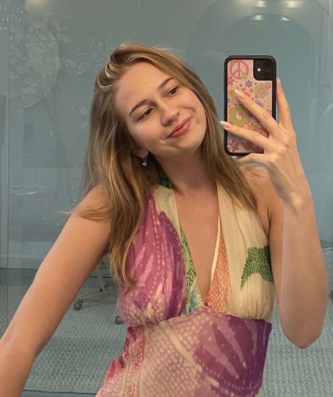

Sarah Montofer's Portfolio Site
About Me
I am currently finishing my final year at Chapman University pursuing a degree in Data Analytics. Throughout this time I have gained the technical and interpersonal skills necessary to address and solve many real-world problems creatively and effectively. Some of my interests include food, entrepreneurship, existential psychology, fashion, and the many nuances of our thought. Feel free to reach out if you would like to chat or think I would be a good candidate for any positions post grad!
Work Experience
Executive Assitant @ OwnWorld
- Assist the CEO in day-to-day operations associated with a startup.
- Manage all hiring processes, social media accounts, and email inboxes.
- Grow my understanding of Tech and Business through many great mentors from the AI Foundation and Leaders in real-time Animation.
Clothing Resale and Design
- Generated over $6,500 in revenue selling thrifted and hand-sewn clothing online.
- Researched upcoming trends and marketing strategies to target consumers on LinkedIn Learning.
Education
Chapman University - 2018-Present
Bachelors Degree in Data Analytics
- Gained the interpersonal and technical skills necessary to model data and portray it's relevancy to varying audiences.
- Converted data into actionable insights by predicting & modeling future outcomes utilizing Microsoft Excel.
- Relevant Coursework: Visual Programming, Business Statistics, Statistics, Intro to Business Analytics, Human Computer Interaction, Data Communication, Principles in Microeconomics, Database Management, Calculus and Visual Culture.
Projects
Discerning DeepFakes
Spearheaded a year-long project to inform the Chapman community about the dangers of DeepFakes.
Working With Waste Water
Designed a digital board game to educate middle school and high school students about various wastewater treatments. I was in charge of designing all visual elements, such as the cards and playing pieces that I made in Canva.
Dietary Deligths
I Created an app prototype with a group of students. The app matched people to restaurants based on their dietary preferences (Vegan, Kosher, Gluten-Free etc.) and allowed users to filter by price, distance, food genre, and more. I also designed the logo for the app and most visual elements.
Click here to view the Prototype